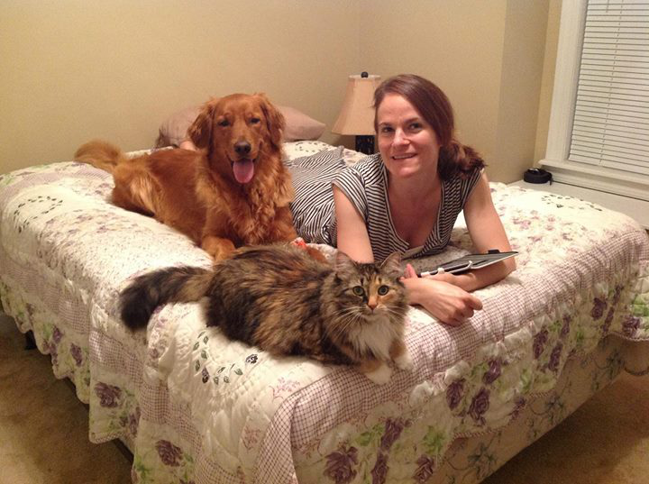

I live in Raleigh, North Carolina with my wonderful wife Amanda and our dog Charlie and cat Andi. Here is a photo of my family!

I'm a web developer for WhiteBox Learning, an educational software company. I also contract for a joint research project between Virginia Tech and North Carolina State University. Go Pack! (and Hokies, I suppose).
For fun away from the computer I enjoy beach volleyball, a healthy amount of good television, and I've recently taken up golf but so far it's an incredible challenge (read: I'm not good). Occasionally I'll get into the habit of running but I always seem to get out of that habit after an injury or something like that. I also, oddly, do enjoy the weekly yard-work chores. It's a great time to zone out and also a great time to problem-solve if there is a nagging work related problem that I'm having trouble with. Somehow when I'm just pushing the mower around the yard my brain seems to know how to decide when you need to fix the problem and when you need to let it go. Some weeks I need the grass to grow faster so I can solve more problems!
None of the code I write for employers is open source, so my github profile is a bit thin. I'm also quite busy with non-programming responsibilities and hobbies, so that doesn't help.